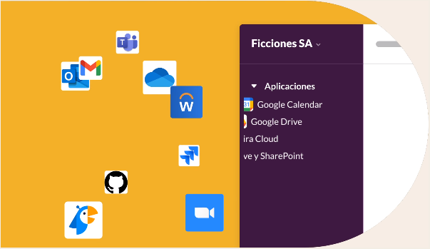

Agiliza el trabajo con todas tus herramientas en un mismo lugar
Automatiza las tareas rutinarias con las posibilidades de la IA generativa y simplifica tu flujo de trabajo con tus aplicaciones favoritas listas para usar en Slack.
Más información sobre la plataforma de Slack